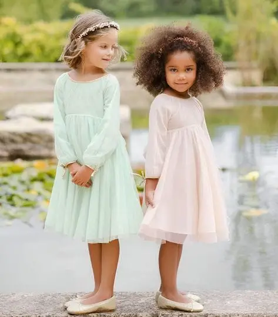
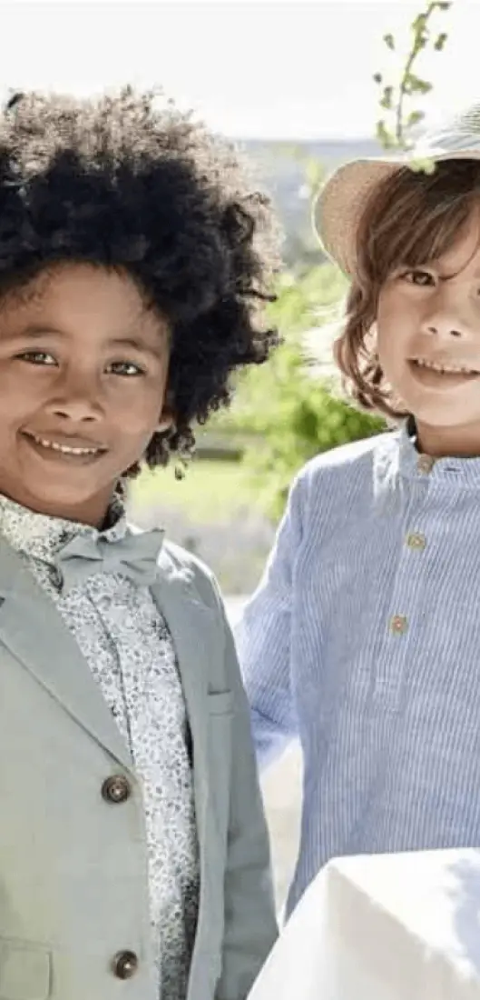
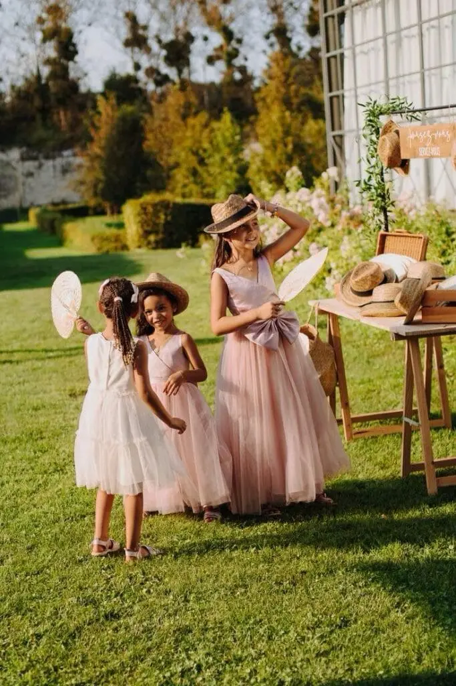
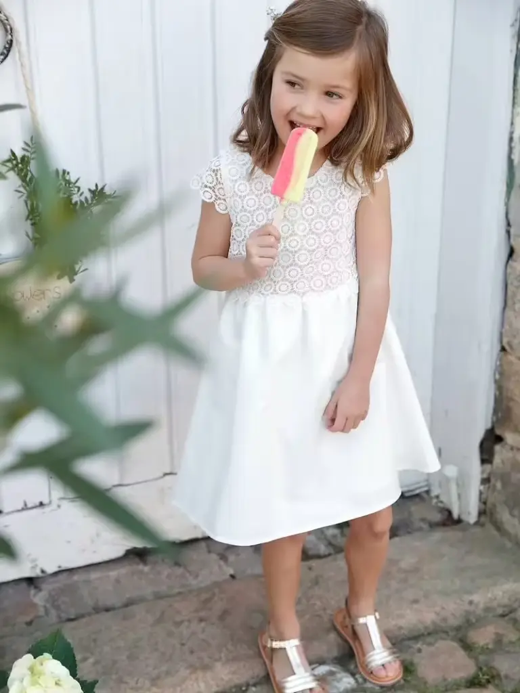
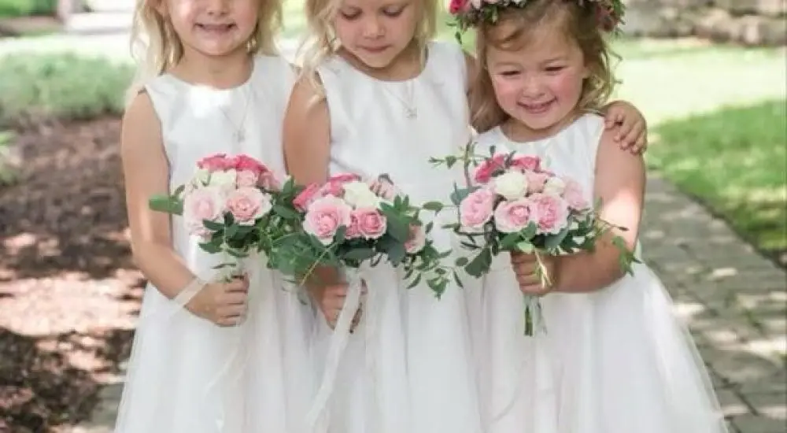
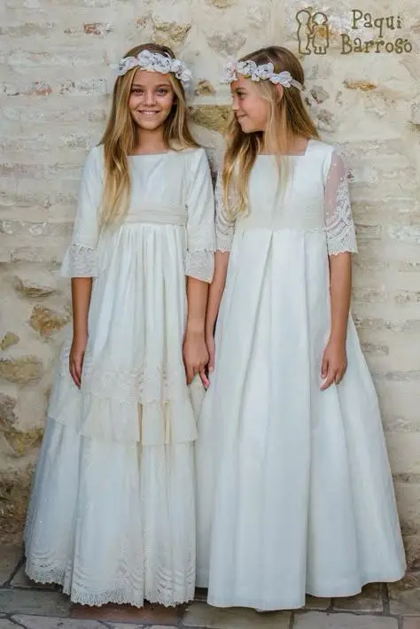
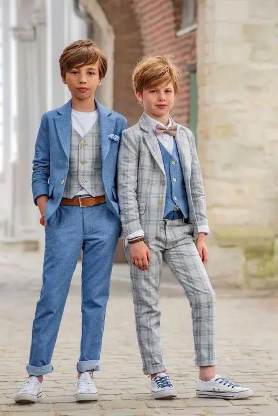

L’organisation d’un mariage nécessite de gérer plusieurs aspects, dont la sélection des tenues pour les enfants d’honneur. Ils ont souvent un rôle central lors de la cérémonie. En effet, le groupe d’enfants d’honneur, composé des jeunes enfants de votre famille ou d’amis proches, accompagne les mariés à l’entrée, à la sortie de l’église et porte la traîne de la mariée.
Leur apparence doit donc refléter l’importance de l’événement. Entre élégance, confort et harmonie avec le thème du mariage, il peut s’avérer complexe de prendre en compte tous ces paramètres pour choisir leurs tenues sur Bordeaux. Dans cet article, je vous donne 7 astuces incontournables pour choisir des tenues éblouissantes pour que les enfants d’honneur soient à la fois élégants et à l’aise le jour J.

Tenues pour les filles en fonction du thème
Voici quelques idées de tenues incontournables pour les filles d’honneur en fonction de votre thème de mariage :
Votre thème se porte sur le bohème ? Optez pour des robes fluides, des motifs floraux, des robes à frange accompagnées d’accessoires dans les cheveux comme des papillons dans les cheveux, des petits rubans…
Pour un mariage champêtre, les robes midi en coton ou dentelle avec des couleurs douces (vert sauge, crème) seront parfaites. Pour les accessoires, une couronne de fleurs et des sandales complèteront bien le look.
Le thème de votre mariage est vintage ? Choisissez alors des robes style années 20 à 60, taille cintrée, jupes évasées et vous pouvez accessoiriser par exemple avec des gants, headbands à strass.
Le thème est glamour et élégant pour votre mariage à Bordeaux ? Des robes longues couleurs métalliques ou en tissus raffinés (velours, satin) seront éblouissantes !
Vous avez choisi un thème hivernal ? Je vous recommande des robes longues avec manches longues ou manteau. Les meilleures couleurs pour le thème hivernal sont les couleurs froides (bleu nuit, gris argenté).
Pour un mariage plus classique, je vous recommande de choisir une robe blanche arrivant deux ou trois centimètres en dessous du genou.
Pour compléter les tenues, vous pouvez également accessoiriser avec des broches, des nœuds papillon, des bijoux, des ceintures en satin, des ballerines… Ces détails élégants apporteront une touche de sophistication. Qu’en pensez-vous ?
En plus, bonne nouvelle, les accessoires sont souvent à petits prix !
Tenues pour les garçons en fonction du thème
Voici quelques idées de tenues incontournables pour les garçons d’honneur selon votre thème de mariage :
Pour un mariage bohème, pourquoi ne pas privilégier des tenues légères et aérées pour les petits garçons d’honneur ? Une chemise à col mao en lin ou en coton serait une bonne option. Tandis qu’un pantalon ample compléterait bien la tenue et assurerait confort et liberté de mouvement. Côté couleurs, des teintes neutres comme le blanc cassé, le beige ou le bleu clair s’accordent parfaitement avec l’atmosphère bohème.
Pour une cérémonie champêtre, ne serait-ce pas parfait de choisir une chemise blanche et un pantalon bleu, un combo simple mais efficace ? Et pourquoi ne pas ajouter un gilet pour rehausser le style sans risquer de faire trop formel ? Enfin, qu’en dites-vous d’un nœud papillon ? C’est l’accessoire parfait pour transformer un petit garçon en un véritable gentleman élégant !
Vous faites un mariage vintage sur Bordeaux ? Un mariage vintage appelle des tenues à l’ancienne, n’est-ce pas ? Pour les garçons d’honneur, un pantalon taille haute avec un gilet ajusté et une chemise à manches longues s’accorderont parfaitement à votre thème vintage. Et si on ajoutait une paire de chaussures en cuir, comme des derbies, pour un look encore plus élégant ? Pourquoi ne pas ajouter à cela un béret ou une casquette, pour une touche d’élégance supplémentaire ? Enfin, les tons comme le gris, le bleu marine ou le beige apporteront cette touche rétro et intemporelle !
Pour un mariage hivernal, plusieurs choix s’offrent à vous :
Vous pouvez choisir un polo sous une chemise, accompagné d’un pantalon droit ? Si votre petit garçon a trop chaud, il pourra facilement enlever le polo tout en restant élégant grâce à la chemise. Et si vous associez un pull en laine avec un pantalon en laine assorti et de jolies bottines en cuir pour un look à la fois cosy et raffiné ? Ou bien, que diriez-vous d’un cardigan en laine associé à une chemise blanche et un pantalon en velours côtelé ? Vous pourriez aussi miser sur un manteau chaud pour plus de confort.
Votre mariage est traditionnel ? Les garçons d’honneur pourraient par exemple porter des costumes miniatures, à l’image de ceux des adultes, qu’en dites-vous ? Un ensemble composé d’une veste noire (bleu marine ou gris foncé), d’une chemise blanche, d’un pantalon de costume à coupe droite et d’une cravate ou d’un nœud papillon aura pour effet d’être élégant, simple et confortable. Et pour les chaussures, que choisir ? Mocassins ou chaussures à scratchs ? Ces deux modèles incontournables permettront d’éviter les trébuchements, l’enfant sera à son aise pour courir et jouer avec ses camarades.
Quelles couleurs pour les tenues des enfants d’honneur ?
Pour créer une harmonie visuelle entre les tenues des enfants d’honneur et celles des demoiselles et garçons d’honneur, vous pouvez jouer avec les couleurs et les nuances pour créer un effet éblouissant.
Les demoiselles d’honneur portent des robes pastel (rose poudré, bleu ciel, vert clair) ? Alors, les tenues d’enfants d’honneur pourraient être dans des tons assortis ? Les garçons en costume bleu clair et les filles dans une robe blanc cassé ou rose pâle.
Si les garçons d’honneur optent pour des costumes sombres, comme du bleu marine ou du gris anthracite, vous pouvez choisir des couleurs plus claires pour les enfants d’honneur, mais toujours dans la même palette. Par exemple, un pantalon gris et un pull bleu marine pour les garçons, une robe bleu clair ou ivoire pour les filles, vous validez ?




Vous envisagez des couleurs vives ou métalliques, comme l’or ou le bordeaux, pour votre mariage ? Apportez des touches subtiles aux tenues des enfants d’honneur pour qu’ils soient élégants ! Des accessoires comme des nœuds papillon ou des barrettes dans ces teintes seraient éblouissants. Vous préférez des touches discrètes ou un contraste plus marqué ?
Pour plus d’originalité, plutôt que de choisir des vêtements parfaitement identiques, envisagez de varier les tenues.
Les filles et les garçons peuvent porter les mêmes tenues, mais dans différentes couleurs, ou inversement, les mêmes couleurs, mais des tenues dans des coupes différentes.
L’essentiel est de créer une cohésion entre les tenues des enfants d’honneur et celles des demoiselles et garçons d’honneur, afin d’obtenir un joli rendu sur les photos
Quel est l’avis de vos enfants ?
Faire participer les enfants pour choisir leurs vêtements est une excellente stratégie pour accroître leur enthousiasme et leur fierté d’être enfants d’honneur.
Interrogez-les sur leurs préférences en matière de couleurs ou de styles.
Cela leur donnera un sentiment de respect et de valorisation, tout en s’assurant qu’ils soient à l’aise dans leurs habits.
Pour impliquer les filles d’honneur, donnez-leur la possibilité de sélectionner un petit bouquet de fleurs à porter lors de la cérémonie. Ceci pourrait être un excellent moyen de les rendre acteurs pour cette journée spéciale.


Qui choisit les tenues ?
Deux possibilités s’offrent à vous :
Vous n’avez pas de budget prévu pour les tenues des enfants d’honneur ?
Dans ce cas, il faudra donner des instructions aux parents sans imposer de marques ou de tenues en particulier. Même s’il est préférable que les accessoires soient un minimum en harmonie. Vous leur préciserez par exemple : tenue blanche avec grosse ceinture de la couleur de votre choix. Prévenez les parents environ trois ou quatre mois avant le mariage pour qu’ils trouvent une tenue adéquate dans la joie et le calme, sans aucune pression.
Au contraire, vous avez prévu un budget pour le cortège ? Vous choisirez alors les tenues et payerez à vos frais.
Avez-vous pensé au confort ?
Les enfants adorent bouger, jouer, courir partout, non ? Alors, des tenues inconfortables ne risquent-elles pas de gâcher leur plaisir et de compliquer la tâche des parents ?
Privilégiez des matières naturelles comme le coton, le lin ou des mélanges légers.
Elles régulent bien la température corporelle et sont parfaites pour les longues journées de mariage.
Côté coupe, le plus confortable sont les robes amples et les pantalons ajustables.
Avez-vous pensé à prévoir des tenues de rechange ? En cas de taches ou d’accidents, une petite tenue supplémentaire dans les affaires des parents peut être très pratique.
Pour le lendemain, prévoyez également une tenue plus décontractée, comme une robe large en gaz de coton pour les filles et un joli ensemble.


Quel âge ont vos enfants ? C’est la question incontournable !


L’âge de votre enfant est-il un facteur clé pour choisir la tenue idéale ?
La réponse est oui. En effet, avant l’âge de 5 ans, les petites filles adorent généralement les couronnes de fleurs et les jupes courtes et fluides. Qui n’aime pas se sentir comme une petite fée de mariage ? Votre petite fille a quatre ans ? Alors, des chaussures fermées de type ballerines seront parfaites !
Quant aux petits garçons, la tenue incontournable qui rencontre souvent un franc succès est la chemise blanche, accompagnée d’un bermuda. Cette combinaison allie simplicité et élégance, tout en assurant un confort optimal pour les jeunes enfants qui souhaitent bouger et jouer tout au long de la journée.
Cependant, vous avez remarqué qu’à mesure que les enfants grandissent leur style évolue ? À partir de 5 ans, les filles apprécient plus les robes structurées, les jupes longues, avec des détails plus élégants comme des dentelles ou des tissus brillants. Il existe des mini-talons d’un ou deux centimètres qui peuvent venir compléter leurs tenues plus travaillées.
Mais attendez… Pour les garçons aussi, les choses se compliquent ! Leurs goûts commencent à se préciser, ils veulent être un peu plus élégants ! Votre garçon veut s’habiller comme les plus grands ? Vous pouvez choisir des costumes complets ou des pantalons avec des chemises plus ajustées, accompagnés d’un nœud papillon ou d’une cravate, par exemple.


Mon avis
En tant que wedding planneuse, je tiens à souligner que choisir les tenues des enfants d’honneur est tout un art ! Il faut à la fois respecter le thème, assurer leur confort... et éviter les crises de "je ne veux pas porter ça !" le jour J.Pourquoi vous ne leur laissez pas un peu d'autonomie dans le choix des accessoires ? Croyez-moi, ça peut faire toute la différence pour les motiver !N'oubliez pas : des robes ou costumes trop serrés, c'est le cauchemar de tout enfant !Vous aimez le coton ou le lin ? Avec ces matières, je peux vous garantir qu’ils seront plus libre et à l'aise pendant la journée de folie qui les attend !Faites-moi part de vos idées, et ensemble, on va rendre ces petits bouts de chou absolument irrésistibles sur vos photos !
Alexandra Ambert
En Bref...
Avec des tenues simples, de belle qualité, dans l’esprit de votre mariage, et en leur donnant la possibilité de choisir au moins en partie quelques éléments de leurs tenues, vos jeunes invités deviendront des incontournables le jour J. Ils apporteront une touche éblouissante et pleine de charme à votre cérémonie. Mais ils se sentiront également plus enthousiastes et plus impliqués tout au long de cette fabuleuse journée !
En gardant à l’esprit l’aspect pratique et esthétique, vous vous assurerez que les enfants d’honneur se sentent bien tout en restant élégants !